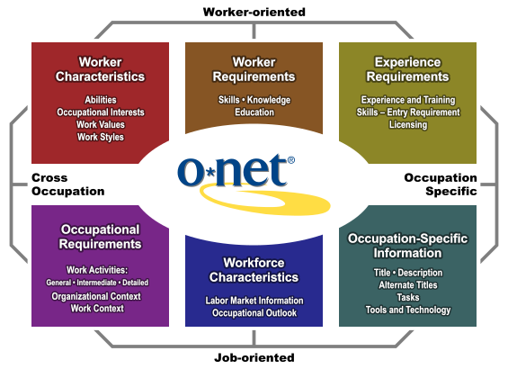

250,000 specific occupation (Software Engineer, Senior Hardware Enginee)
About O*Net - The Occupational Information Network

The primary source of occupational information
Helps to facilitate the development and maintenance of a skilled workforce
Has hundreds of standardized and occupation-specific descriptors
Updated by a broad range of workers in each occupation
occupation - O*Net Content Model
Occupation requires mix of:
knowledge
skills
abilities
activities
tasks
Provide a standardized, measurable set of variables called descriptors
The Content Model was developed using research on job and organizational analysis.
It embodies a view that reflects the character of occupations (via job-oriented descriptors) and people
(via worker-oriented descriptors).
The Content Model also allows occupational information to be applied across jobs, sectors, or industries (cross-occupational descriptors)
and within occupations (occupational-specific descriptors).
These descriptors are organized into six major domains, which enable the user to focus on areas of information
that specify the key attributes and characteristics of workers and occupations.